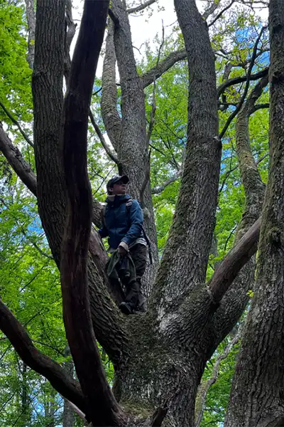
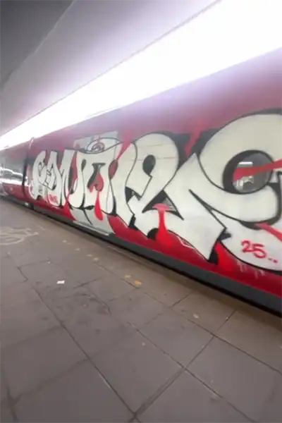
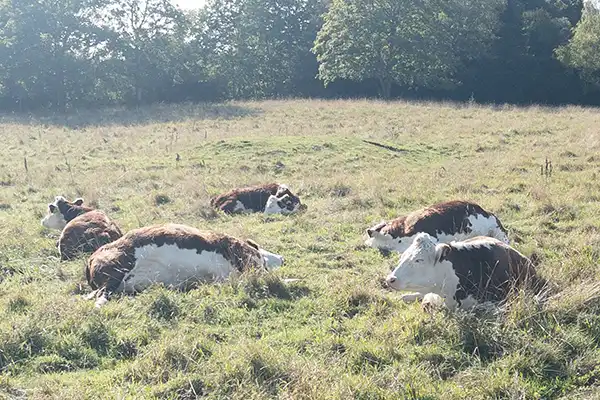
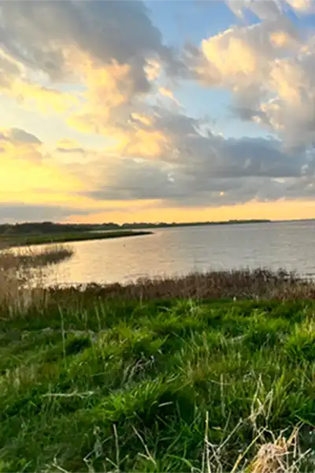
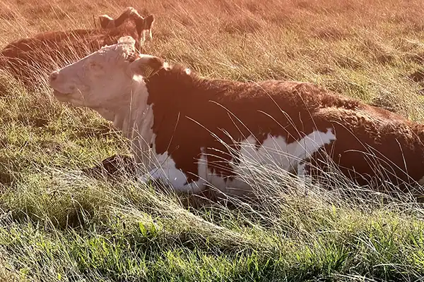
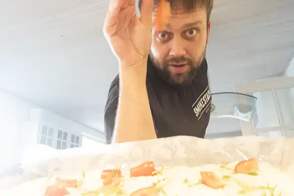

Fotomarathon















Bedste venner
Til toppen
De små ting
Til toppen
Der var engang
Til toppenPå hovedet
Til toppen
For enden af regnbuen
Til toppen
Fodspor
Til toppen
Skræmmende
Til toppen
Smil på læben
Til toppen
Når lyset falder
 Til toppen
Til toppen
Den nøgne sandhed
Til toppenSå er det lige før
Til toppen
Passion
 Til toppen
Til toppen
Et ulige antal
Til toppenMidnatstimen
Til toppen
Ud af skyggerne
Til toppen
Et særligt sted
Til toppenStensom
Til toppen
Ekstase
Til toppen
Uendelig kærlighed
 Til toppen
Til toppen
Fredfyldt
Til toppenHvad gik galt?
Til toppen
Åh nej…
Til toppen